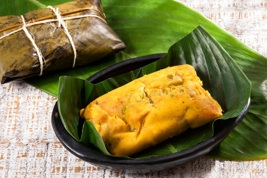

Tamales (colombian style)

Colombian tamales are larger and heartier, typically made with a mixture
of mass, pork, chicken, vegetables, and sometimes rice, all wrapped in
banana leaves and steamed. They are especially popular during Christmas.
Ingredients
- 3 cups flour mass or precooked cornmeal
- 2 cups chicken broth
- 1 cup lard or vegetable oil
- 2 tsp annatto (achiote) for color
- 1 lb pork, cut into chunks
- 1 lb chicken, cut into pieces
- 2 cups cooked rice
- 2 potatoes, sliced
- 1 carrot, sliced
- 1 onion, chopped
- 2 garlic cloves, minced
- Salt, pepper, cumin to taste
- Banana leaves (soaked in warm water)
How to cook it
- Season the pork and chicken with garlic, onion, cumin, salt, and pepper. Let marinate.
- In a bowl, mix mass with broth, lard, and annatto for color to form a dough.
- Cut banana leaves into large rectangles, place a layer of dough, then add pork, chicken, rice, potatoes, and carrots on top.
- Fold the leaves to seal the tamal, then tie with string.
- Steam the tamales for 2-3 hours until fully cooked.
- Let them rest before serving, traditionally enjoyed during holidays with hot chocolate or coffee.
Credits to where credits are due, I used chatGPT for the ingredients and the steps
Go back home